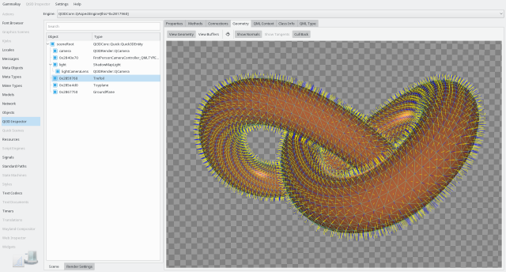
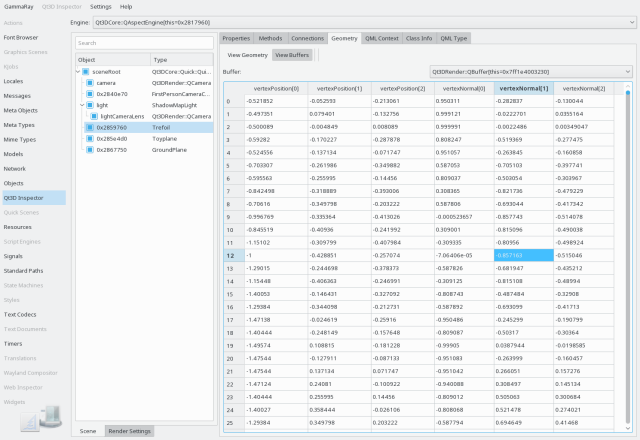

The Qt 3D inspector allows you to browse the entity tree and the frame graph of a Qt 3D scene. If the target application contains multiple Qt 3D engine, you can select the desired Qt3DCore::QAspectEngine in the combo box at the top.
On the left side you can switch between two views with the tabs at the bottom:
The entity tree shows the hierarchy of the Qt3DCore::QEntity instances of the scenes. The checkbox next to each entity shows the state of the entity enabled state (see Qt3DCore::QEntity::enabled), which can also be changed this way. The context menu on the entity tree allows navigation to other views of the entity object.
The frame graph tree shows the hierarchy of the Qt3DRender::QFrameGraphNode instances composing the Qt3DRender::QRenderSettings of a scene. The checkbox next to each node shows the state of the frame graph node enabled state (see Qt3DRender::QFrameGraphNode::enabled), which can also be changed this way. The context menu on the entity tree allows navigation to other views of the node object.
When selecting an entity with a geometry component attached, or a geometry component directly in a different view, the Qt3D Geometry Inspector tab is shown on the right hand side.
The geometry inspection tab has two views:
The wireframe view renders the selected geometry separately, so it can be inspected for defects easily. Common issues involve:

You can move the camera in the wireframe view using mouse (left and middle mouse buttons) or keyboard (arrow keys, page up/page down, W/A/S/D).
You can switch to the raw buffer view in the toolbar of the Qt3D Geometry Inspector tab, and select the Qt3DRender::QBuffer instance to inspect in the combo box at the top right.

The buffer view then shows the buffer data decoded based on its associated Qt3DRender::QAttribute instances.
The following examples make use of the Qt3D inspector: